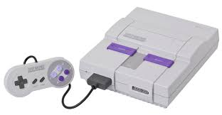

The Invention of the Nintendo 64
History of the Nintendo 64
Nintendo Entertainment System
Super Nintendo Entertainment System
Project Reality (The Development of the N64)
At the beginning of the 1990s, Nintendo led the video game industry with its Nintendo Entertainment System (NES). Although the NES follow-up console, the Super NES (SNES), was successful, sales took a hit from the Japanese recession. Competition from long-time rival Sega, and relative newcomer Sony, emphasized Nintendo's need to develop a successor for the SNES, or risk losing market dominance to its rivals. Further complicating matters, Nintendo also faced a backlash from third-party developers unhappy with Nintendo's strict licensing policies.
..Nintendo resisted that summary conclusion, arguing that the reason for SGI's ultimate choice of partner is due to Nintendo having been a more appealing business partner than Sega. While Sega demanded exclusive rights to the chip, Nintendo was willing to license the technology on a non-exclusive basis. Michael Slater, publisher of Microprocessor Report said, "The mere fact of a business relationship there is significant because of Nintendo's phenomenal ability to drive volume. If it works at all, it could bring MIPS to levels of volume [SGI] never dreamed of".
James Clark met with Nintendo CEO Hiroshi Yamauchi in early 1993, thus initiating Project Reality. On August 23, 1993, the two companies announced a global joint partnership and licensing agreement surrounding Project Reality, projecting that the yet unnamed eventual product would be "developed specifically for Nintendo, will be unveiled in arcades in 1994, and will be available for home use by late 1995 ... below $250".This announcement coincided with Nintendo's August 1993 Shoshinkai trade show.
As with most of the computing industry, Nintendo had limited experience with 3D graphics, and worked with several outside companies to develop the technology comprising the console. Some chip technology was provided by NEC, Toshiba, and Sharp. SGI had recently acquired MIPS Computer Systems, and the two worked together toward a low-cost realtime 3D graphics hardware system. SGI and its subsidiary MIPS Technologies were responsible for the R4300i microprocessor and the 3D graphics hardware used in the Nintendo 64.
The initial Project Reality software development platform was developed and sold by SGI in the form of its US $100,000–US $250,000 Onyx supercomputer loaded with the namesake US $50,000 RealityEngine2 graphics boards and four 150 MHz R4400 CPUs, and with early Project Reality application and emulation APIs. By purchasing and developing upon this graphics supercomputing platform, Nintendo and its select game developer partners could fully prototype their games according to SGI's estimated console performance, prior to the finalization of the console hardware specifications. That software-based console prototype platform was later supplanted by a workstation-hosted console simulation board, representing the finalized console hardware. SGI's performance estimates based upon their RealityEngine supercomputing platform were ultimately reported to be fairly accurate to the final consumer console product.
..the console's design was mostly finalized by mid-1995, though Nintendo 64's launch was delayed until 1996. As part of the fifth generation of gaming, the system competed primarily with the PlayStation and the Sega Saturn. The Nintendo 64 was launched with three games: Super Mario 64 and Pilotwings 64, released worldwide; and Saikyō Habu Shōgi, released only in Japan. The Nintendo 64's suggested retail price at its United States launch was US $199.99 and it was later marketed with the slogan "Get N, or get Out!". With 32.93 million units worldwide, the console was ultimately released in a range of different colors and designs, and an assortment of limited-edition controllers were sold or used as contest prizes during the system's lifespan. IGN named it the 9th greatest video game console of all time and in 1996, Time magazine named it Machine of the Year.
Content taken from Wikipedia